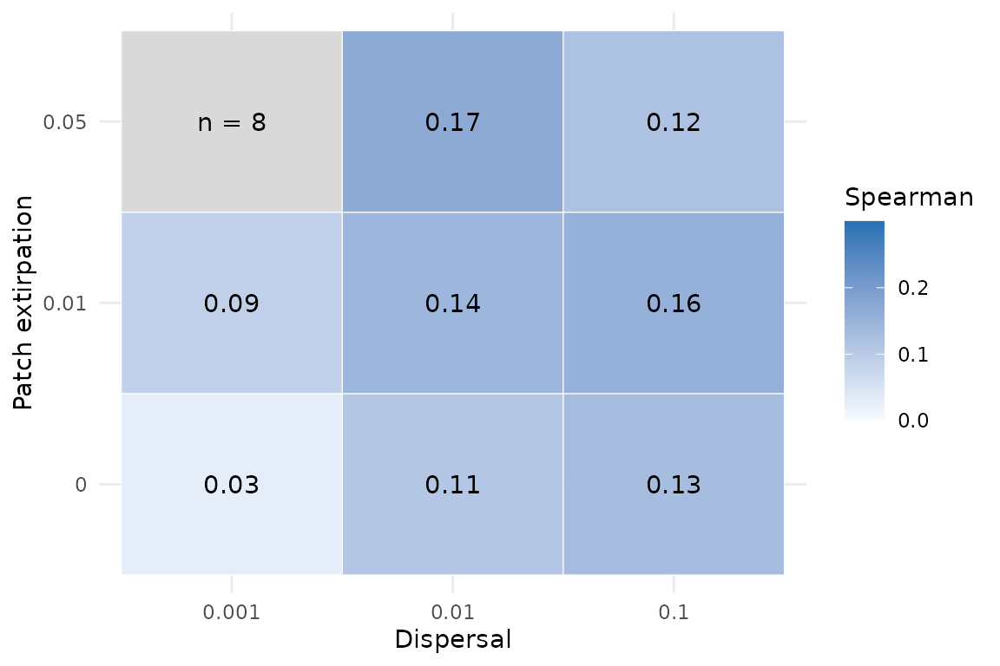
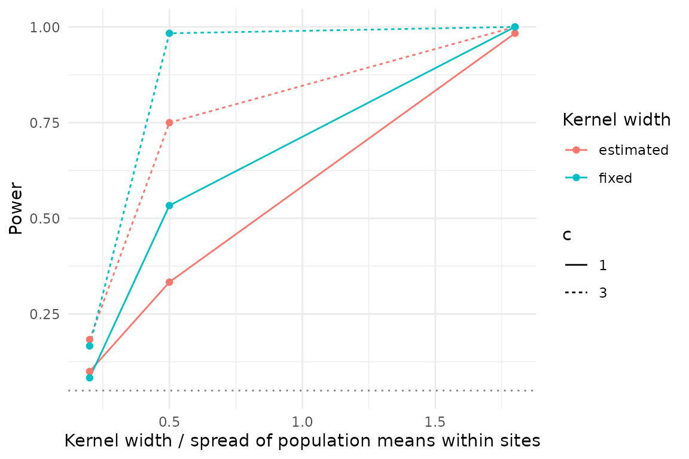
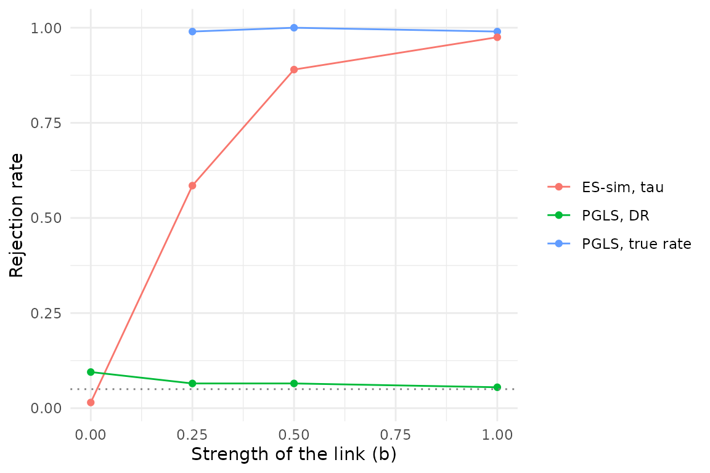

Does metacommunity assembly leave a trace in branch rates?
Source:vignettes/articles/rates-assembly.Rmd
rates-assembly.RmdMetacommunity ecology and macroevolution have mostly been studied apart, although local adaptation and community assembly can change speciation and extinction and, through them, the shape of phylogenies (Leibold et al. 2022). Models of speciation in metacommunities link spatial structure and dispersal to diversification (Hubert et al. 2015), and the evolution of traits within communities feeds back on their assembly (McPeek 2017). Januario et al. (2025) tested one link of this kind, between the metapopulation persistence of species and their tip speciation rates, and found none. Two mechanisms could produce such a decoupling. Evolution mediated by priority effects can make species equivalent at the regional scale, so that properties of local dynamics do not translate into differences among species (Leibold et al. 2019), and local evolution often dampens spatial patterns (Urban et al. 2020). From these two mechanisms we derive a working hypothesis of our own: adaptive divergence driven by local dynamics stays among populations, so its trace should be weak in rates estimated among species and strong in trait variation among populations. However, these studies deal with ecological patterns or with rates of diversification, and none uses rates of trait evolution per branch, so the link to branch rates is our interpretation. Moreover, a negative result from a test with low power cannot distinguish a decoupling from a failure to detect.
This article asks, with simulations in which the truth is known, what
can be recovered at each scale. We ask (i) how well branch rates of
trait evolution are identified at all, (ii) whether an assembly signal
planted in branch rates is recovered, (iii) whether local adaptation and
character displacement are recovered from trait variation among
individuals and populations, and (iv) whether a regression of tip
speciation rates on persistence, as in Januario et al. (2025), has power
to detect a causal link. It is a study of recovery, not of causation. In
the simulations, local adaptation and character displacement act when
individuals are sampled and do not evolve during the dynamics, branch
rates are set by turnover_rates() from the history of each
lineage, and the two layers do not share the trait. Whether assembly
causes the rates of trait evolution needs traits that evolve
within the metacommunity, which comdynamite does not yet simulate (see
Limitations). The tutorial on the generators used here is in
vignette("branch-rates").
Branch rates are weakly identified
With one realisation of the process per branch, the rate of a branch
and the change along it are different quantities, and an estimator that
reads one change per branch can at best follow the change. We simulated
traits on trees of 60 tips with trait_rates() under three
models of rate variation and estimated rates per branch with RRphylo
(Castiglione et al. 2018). The correlation between true change and true
rate, which bounds what such an estimator can recover, had medians below
0.4 in all three models (Table 1). RRphylo followed the realised change
(median Spearman correlation 0.33–0.38) but hardly followed the true
rate (0.07–0.13). Methods that pool branches within rate regimes are not
bound in this way. BAMM (Rabosky 2014), fitted to 20 trees of 100 tips
simulated with rate shifts drawn as in its own prior (shifts by a
Poisson process, each multiplying or dividing the rate by 6), reached a
median Spearman correlation of 0.53 between posterior mean and true rate
per branch, and gave a marginal probability of a shift of 0.18 on
branches with a true shift against 0.02 on the others. The two
experiments differ in tree size and generating model, so they are not a
contest between the methods. As a result, even a perfect link between
assembly and rates would be seen through a noisy estimate, which is less
noisy when rates change in discrete regimes.
| model | with change | with rate | ceiling |
|---|---|---|---|
| Brownian log rate | 0.38 | 0.13 | 0.32 |
| lognormal per branch | 0.33 | 0.07 | 0.39 |
| inherited shifts | 0.38 | 0.13 | 0.27 |
A planted trace is weakly recovered among species
We then planted the trace. We simulated 360 metacommunities, each
with 30 species on a 10 × 10 grid for 600 steps. They crossed dispersal
(0.001, 0.01, 0.1), patch extirpation (0, 0.01, 0.05) and two levels of
spatial autocorrelation of the environment, with 20 replicates per cell.
In each, turnover_rates() set the rate of each tip branch
to increase linearly with the turnover of its interaction partners over
the last 0.1 time units of the branch (k = 100), with internal branches
at the base rate, and the trait evolved with these rates. The rate of a
tip therefore also depends on the length of its branch. The Spearman
correlation between the RRphylo rate of the tips and partner turnover
averaged 0.03–0.17 across cells (Fig. 1). Only the cell with the lowest
dispersal and no extirpation stood out, with a lower value, since cell
means have a standard error of about 0.03. With the lowest dispersal and
the highest extirpation, populations hardly co-occurred: displacement
could not be fitted in any of the 40 metacommunities of that cell, and
only 8 gave a correlation for branch rates. These values hold for this
map from turnover to rate, trees of 30 tips and RRphylo; a stronger map
or larger trees would give higher correlations, so the experiment shows
a favourable but not a limiting case.

Fig. 1. Mean Spearman correlation between the RRphylo rate of the tips and the turnover of interaction partners that set their true rates, across dispersal and patch extirpation (40 metacommunities per cell). Note that no cell exceeds 0.2; the grey cell had only 8 metacommunities with populations left to analyse.
The signal is recovered among populations
From the same metacommunities, we sampled individuals with
sample_individuals(), giving populations a response to the
environment of their site (local adaptation, h = 0 or 0.5) and a push away from
co-occurring species (character displacement, c = 0, 1 or 3), with 20 or 100 sites and 5 or
20 individuals per population. Two tools were compared: the T-statistics
of Violle et al. (2012), with tstats(), and the joint fit
of h and c to population means by
population_shifts(), which follows Goldberg & Lande
(2006) and Adams & Collyer (2007) in assessing divergence among
sympatric species after removing the environmental gradient.
The T-statistics alone do not separate the two processes, because
they act in opposite directions on the variance within communities.
Local adaptation makes co-occurring populations converge on the
environment of their site and raises T_{IP/IC}, whereas displacement makes them
diverge and lowers it. With the null model that exchanges population
means among populations of the same species
(null_ip = "species"), which keeps composition, abundances
and variances within populations, the standardised effect size of T_{IP/IC} was near zero without either
process and strongly positive with local adaptation alone. Adding
displacement reduced it, and with c = 3
it was close to zero (Table 2). Interestingly, the combination of local
adaptation and strong displacement looks like no process at all. By
construction, the null that permutes individuals within sites (Taudière
& Violle 2016) asks only whether populations differ, so it would
return a negative effect whenever co-occurring species have different
means. We did not find this species-restricted null in the literature on
T-statistics, although our search was not exhaustive.
| h | c | SES T_IP/IC | SES T_PC/PR |
|---|---|---|---|
| 0.0 | 0 | 0.08 | -0.09 |
| 0.0 | 1 | -0.80 | 0.02 |
| 0.0 | 3 | -1.00 | 0.15 |
| 0.5 | 0 | 4.15 | -1.19 |
| 0.5 | 1 | 1.78 | -0.87 |
| 0.5 | 3 | 0.25 | -0.47 |
population_shifts() recovered h in every design (root mean square error
0.02–0.04). Power for c = 1, against
the 95% quantile of \hat c under c = 0 in the same cell (20 values per cell,
so the thresholds are approximate), averaged 0.78 with 20 sites and 5
individuals per population and at least 0.94 in the other designs, and
fell in metacommunities with very low dispersal or with extirpation when
samples were small. The error of \hat c
fell mostly with more individuals per population and more species per
site, and the beta diversity of composition did not matter.
Besides sample size, whether c can be identified depends strongly on the width of the competition kernel relative to the spread of populations in the trait within sites. With a narrow kernel, few pairs of populations are close enough to push each other, the push hardly varies among the populations of a species, and c trades off against the kernel width. We tested this in one cell of the design (dispersal 0.01, patch extirpation 0.01, weak spatial autocorrelation, h = 0.5) with 20 sites and 5 individuals per population, shrinking the kernel relative to a fixed spread of 9.8 trait units, the median standard deviation of population means within sites in one of the metacommunities above (Fig. 2). With a kernel one fifth of the spread, power for c = 3 was below 0.2 whether the width was estimated or fixed at its true value. With a kernel half the spread, fixing the width raised power for c = 3 from 0.75 to 0.98, and with a kernel wider than the spread, c = 1 was detected almost always. In the metacommunities above, the kernel is the niche width, which is wide relative to the spread of optima; this is a choice of the simulator, not a property of the method. We conjecture that for traits in which co-occurring species differ far more than any plausible width of a competition kernel, c will not be identifiable with designs of this size, even with the width known.

Fig. 2. Power to detect character displacement (c = 1 or 3) as the competition kernel narrows relative to the spread (standard deviation) of population means within sites, with the kernel width estimated or fixed at its true value (20 sites, 5 individuals per population, 60 replicates). Note that fixing the width helps at intermediate widths but not when the kernel is much narrower than the spread.
The bootstrap test of population_shifts() did not reject
too often (Table 3). Without displacement, it rejected in 5 of 81
replicates with the small design and in none with the large one, so its
size was nominal to conservative. With c = 3 it rejected in at least 93% of the
replicates, but its intervals for c
covered the true value in fewer than half of them, the corrected
estimate stayed below 3, and the intervals for h covered the true value in only 63–88% of
the replicates. We therefore read p_displacement as the
main output and treat the intervals and the corrected value of c as approximate.
| c | sites x individuals | replicates | rejection at 5% | coverage of c | coverage of h | corrected c (median) |
|---|---|---|---|---|---|---|
| 0 | 100 x 20 | 81 | 0.00 | 0.68 | 0.63 | 0.06 |
| 0 | 20 x 5 | 81 | 0.06 | 0.90 | 0.88 | -0.02 |
| 3 | 100 x 20 | 81 | 0.99 | 0.49 | 0.78 | 2.72 |
| 3 | 20 x 5 | 81 | 0.93 | 0.41 | 0.88 | 2.34 |
With full sampling, a PGLS of DR on persistence has no power
Januario et al. (2025) regressed tip speciation rates on
metapopulation persistence (logit equilibrium occupancy, \varepsilon, and log turnover, \tau) by phylogenetic generalised least
squares (PGLS). We asked whether this kind of regression detects a
causal link when one exists. A latent trait evolved by Brownian motion
while lineages speciated at a rate that increased with it (\lambda = \lambda_0 e^{bX}, with b = 0 as the null), until 200 lineages were
alive; the trait set the dispersal of each species in
simulate_metacommunity(), and \varepsilon and \tau were estimated from presence over the
last 30 steps with a two-state Markov model. Tip rates were measured
with the DR statistic (Jetz et al. 2012) on the complete tree. Our
design differs from theirs, which estimated tip rates on a phylogeny of
thousands of species and then analysed 189 sparsely sampled species,
with model selection among predictors.
Persistence was well estimated (\tau correlated 0.84–0.87 with the latent trait), and DR was moderately correlated with the true rate (Spearman correlation 0.33–0.62). Nonetheless, the PGLS of log DR on \varepsilon and \tau (a likelihood-ratio test of both) rejected at about the level of its own slightly inflated size (19 of 200 replicates under b = 0), even with b = 1, whereas the same PGLS on the true rate rejected in almost every replicate with a link (Fig. 3). Our interpretation, not tested separately, is that DR is the inverse of a weighted sum of branch lengths along the path to the root, so sister species have the same DR and its signal lies among clades, while a Brownian PGLS works on contrasts, where DR carries little information. This mechanism should be weaker when tips are sparsely sampled, as in Januario et al. (2025).
We then applied ES-sim (Harvey & Rabosky 2018) to new replicates of the same design. ES-sim tests the Pearson correlation between log tip rates and a trait against 999 traits simulated by Brownian motion on the tree, here two-sided and rejecting at p \le 0.05. We report it for \tau, the component of persistence that followed the latent trait, a choice made after seeing the estimates. ES-sim on \tau detected the link in 117 of 200, 178 of 200 and 195 of 200 replicates for b = 0.25, 0.5 and 1, and rejected in 4 of 200 without a link, so it was conservative rather than liberal. Testing \varepsilon and \tau together, with a Bonferroni correction, detected the link in 83 of 200, 156 of 200 and 185 of 200 replicates. On \varepsilon alone it had no power, because equilibrium occupancy followed the latent trait poorly (Spearman correlation 0.33–0.37). In a negative control, where the trait set extirpation instead of dispersal and the link to persistence is drowned by demographic turnover, neither test detected anything. As a result, with a fully sampled clade the absence of a relationship in a PGLS of DR on persistence is the expected outcome under this model even with a strong causal link, and a test with a simulation null on the better estimated component of persistence detects a moderate link. Whether this holds for sparsely sampled tips was not tested.

Fig. 3. Rejection rate at 5% of three tests of the link between persistence and speciation, against the strength of the causal link b (200 replicates per value, window of 30 steps, fully sampled clades). Note that the PGLS on DR stays near its size under b = 0 at every b, while ES-sim on tau approaches the power of the PGLS on the true rate only for b of 0.5 or more.
What this means
Taken together, the simulations point to one place to look. Branch rates estimated among species are weakly identified, and an assembly signal planted into them is barely recovered with trees of 30 species, whereas the same metacommunities leave a clear signal in trait variation among populations, provided the environment and the local composition enter the analysis. Moreover, with fully sampled clades, a PGLS of DR on persistence has no power even under a strong causal link. Our simulations do not test the working hypothesis itself, because the signal was planted at each scale rather than generated by the dynamics. For empirical work, the practical consequences are (i) to measure individuals and populations together with site environment and composition, rather than species means, when the question is about assembly; (ii) to read the T-statistics only against the species-restricted null and only together with a model of the environment; (iii) to fix the width of the competition kernel from independent knowledge when it is of the order of the spread of populations, and to expect no power for displacement when it is much narrower; and (iv) to test links between tip rates and species properties with a simulation null rather than a PGLS on DR.
Limitations
The main limitation is that the signals were planted, not emergent.
Local adaptation and character displacement enter when individuals are
sampled and do not evolve during the dynamics; branch rates come from
the turnover of partners through turnover_rates(); and the
trait that evolves along the tree is not the trait that is sampled. The
experiment therefore asks how well estimators recover known signals
under realistic structures of assembly, not whether assembly causes the
evolution of traits. Answering that needs population traits that evolve
with local selection and gene flow within
simulate_metacommunity(), and, for the link studied by
Januario et al. (2025), speciation coupled to the metacommunity; both
are planned for a later version of comdynamite. The effect of kernel
width was tested in a single cell of the design and a single sampling
design. In the persistence–speciation experiment, the link from the
latent trait to speciation is imposed as a state-dependent process on a
continuous trait, dispersal is the only route from the trait to
persistence, detection is perfect, clades are fully sampled, and tip
rates are DR rather than BAMM estimates. ES-sim was implemented here
from its published description, and its size for \tau was 4 of 200 replicates; we did not
check whether a null that also accounts for the uncertainty in \tau would change this. In the BAMM
validation, one of the 20 runs had a low effective sample size of the
log-likelihood (62; 215 or more in the others). Finally, all results
come from one simulator, with niches set by Brownian motion on a single
environmental axis.
Reproducing the results
The simulations are in data-raw/:
validation_rates.R and validation_bamm.R
(identifiability), bridge_experiments.R,
bridge_narrow.R and bridge_bootstrap.R
(assembly and populations), januario_power.R and
januario_essim.R (persistence and speciation; the second is
a new run with its own seed), and
vignette_rates_assembly.R, which builds the summaries shown
here. BAMM is a separate GPL program and was only run, not
distributed.
References
Adams, D. C., & Collyer, M. L. (2007). Analysis of character divergence along environmental gradients and other covariates. Evolution, 61, 510–515. https://doi.org/10.1111/j.1558-5646.2007.00063.x
Castiglione, S., Tesone, G., Piccolo, M., Melchionna, M., Mondanaro, A., Serio, C., Di Febbraro, M., & Raia, P. (2018). A new method for testing evolutionary rate variation and shifts in phenotypic evolution. Methods in Ecology and Evolution, 9, 974–983. https://doi.org/10.1111/2041-210X.12954
Goldberg, E. E., & Lande, R. (2006). Ecological and reproductive character displacement on an environmental gradient. Evolution, 60, 1344–1357. https://doi.org/10.1554/05-696.1
Harvey, M. G., & Rabosky, D. L. (2018). Continuous traits and speciation rates: alternatives to state-dependent diversification models. Methods in Ecology and Evolution, 9, 984–993. https://doi.org/10.1111/2041-210X.12949
Hubert, N., Calcagno, V., Etienne, R. S., & Mouquet, N. (2015). Metacommunity speciation models and their implications for diversification theory. Ecology Letters, 18, 864–881. https://doi.org/10.1111/ele.12458
Januario, M., Pinsky, M. L., & Rabosky, D. L. (2025). The metapopulation bridge to macroevolutionary speciation rates: a conceptual framework and empirical test. Ecology Letters, 28, e70021. https://doi.org/10.1111/ele.70021
Jetz, W., Thomas, G. H., Joy, J. B., Hartmann, K., & Mooers, A. O. (2012). The global diversity of birds in space and time. Nature, 491, 444–448. https://doi.org/10.1038/nature11631
Leibold, M. A., Govaert, L., Loeuille, N., De Meester, L., & Urban, M. C. (2022). Evolution and community assembly across spatial scales. Annual Review of Ecology, Evolution, and Systematics, 53, 299–326. https://doi.org/10.1146/annurev-ecolsys-102220-024934
Leibold, M. A., Urban, M. C., De Meester, L., Klausmeier, C. A., & Vanoverbeke, J. (2019). Regional neutrality evolves through local adaptive niche evolution. Proceedings of the National Academy of Sciences, 116, 2612–2617. https://doi.org/10.1073/pnas.1808615116
McPeek, M. A. (2017). Evolutionary community ecology. Princeton University Press. https://doi.org/10.23943/princeton/9780691088778.001.0001
Rabosky, D. L. (2014). Automatic detection of key innovations, rate shifts, and diversity-dependence on phylogenetic trees. PLoS ONE, 9, e89543. https://doi.org/10.1371/journal.pone.0089543
Taudière, A., & Violle, C. (2016). cati: an R package using functional traits to detect and quantify multi-level community assembly processes. Ecography, 39, 699–708. https://doi.org/10.1111/ecog.01433
Urban, M. C., Strauss, S. Y., Pelletier, F., Palkovacs, E. P., Leibold, M. A., Hendry, A. P., De Meester, L., Carlson, S. M., Angert, A. L., & Giery, S. T. (2020). Evolutionary origins for ecological patterns in space. Proceedings of the National Academy of Sciences, 117, 17482–17490. https://doi.org/10.1073/pnas.1918960117
Violle, C., Enquist, B. J., McGill, B. J., Jiang, L., Albert, C. H., Hulshof, C., Jung, V., & Messier, J. (2012). The return of the variance: intraspecific variability in community ecology. Trends in Ecology & Evolution, 27, 244–252. https://doi.org/10.1016/j.tree.2011.11.014